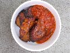

A Taste of Sussex Market
As part of the Brighton Food Festival this weekend saw the return of the A Taste of Sussex Market and Live food show. We wandered through the market yesterday and bought a few odds and ends and today I combined another walk through it with some visits to other local food shops.
First stop was Montezumas, an old favourite. Next was Sussex and the City, a relatively new shop selling produce grown, made or produced within 50 miles. This was my first visit and I can pretty safely say that it won't be my last. I headed back to the festival and picked up a few more bits and pieces, and headed to visit Jolloff Bites to try some of their plantain - when we'd walked past yesterday everything had sold out so I made sure I was early today. I stopped off at the Live Food Show stage and watched Peter Bayless, Masterchef 2006 winner prepare and cook for a while before heading off to Infinity Foods to pick up some groceries.
I then headed home, heavily-laden with goodies and found homes for all of these wonderful foods before heading out again to try some more street food. This time I chose a chicken bastilla from Nomades Moroccan Recipes. I headed off with my food back to the stage area and sat and watched two of the chefs from the Seven Dials Restaurant, somewhere I've been meaning to try for a long time. Having watched them in action, and had a taste of one of their dishes, I think I'll be heading off there sooner than later, especially after picking up a "Buy a main course get 1 free" voucher.
My last stop of the day was to Taj, another old faithful, to top up on a few odds and ends.
(17 images.)
Back to index
Montezuma's chocolate shop |
Brighton and Hove Food and Drink Festival |
Sussex and the city | 
Market Stalls |
Jolloff Bites | 
Jolloff Plantain with spicy sauce |
Local apples |
The Live Food Stage |

Peter Bayless |
Infinity foods |
Our local purchases |
Nomades Moroccan food |
Moroccan Chicken Bastilla |
Live Food Stage Stage - Seven Dials Restaurant I |
Live Food Stage Stage - Seven Dials Restaurant II |
Taj I |
Taj II |
Back to index